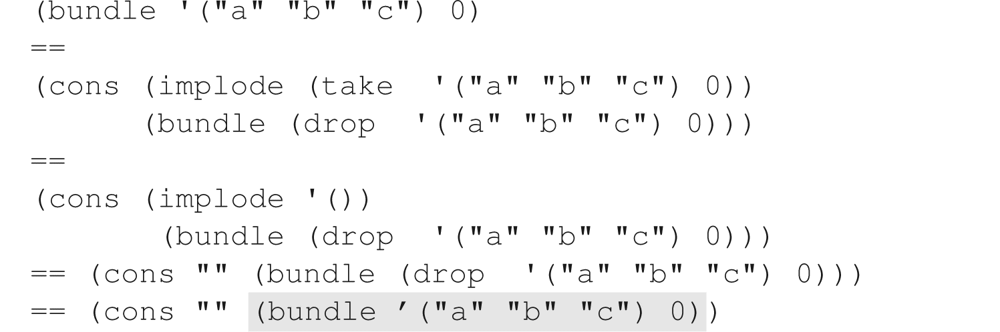
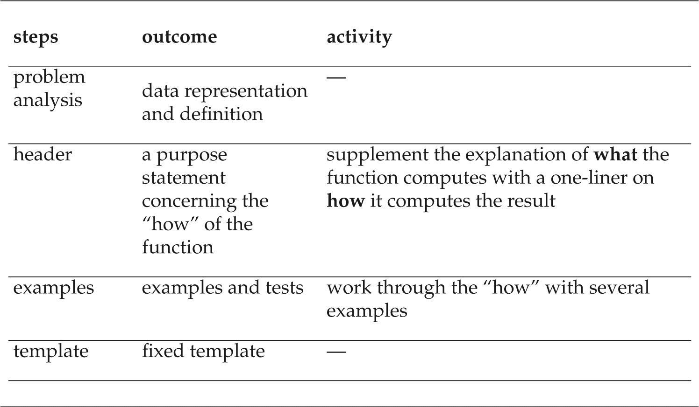
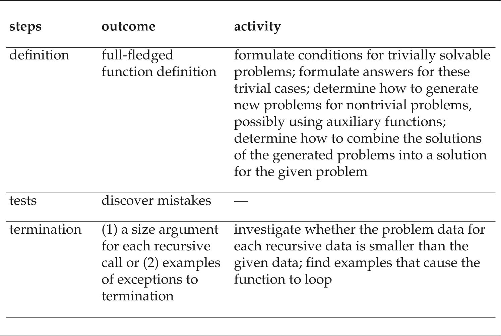
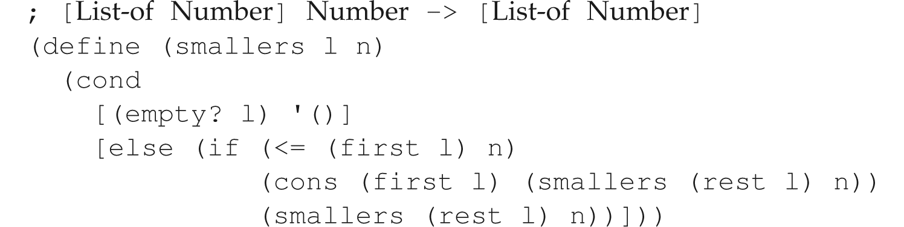

26.2 Termination
Generative recursion adds an entirely new aspect to computations: non-termination. A function such as bundle may never produce a value or signal an error for certain inputs. Exercise 421 asks what the result of (bundle '("a" "b" "c") 0) is, and here is an explanation of why it does not have a result:

The calculation shows how evaluating (bundle '("a" "b" "c") 0) requires having a result for the very same expression. In the context of ISL+ this means the evaluation does not stop. Computer scientists say that bundle does not terminate when the second argument is 0; they also say that the function loops or that the computation is stuck in an infinite loop.
Contrast this insight with the designs presented in the first four parts. Every function designed according to the recipe either produces an answer or raises an error signal for every input. After all, the recipe dictates that each natural recursion consumes an immediate piece of the input, not the input itself. Because data is constructed in a hierarchical manner, input shrinks at every stage. Eventually the function is applied to an atomic piece of data, and the recursion stops.
This reminder also explains why generative recursive functions may diverge. According to the design recipe for generative recursion, an algorithm may generate new problems without any limitations. If the design recipe required a guarantee that the new problems were “smaller” than the given one, it would terminate. But, imposing such a restriction would needlessly complicate the design of functions such as bundle.
The theory of computation actually shows that we must lift these restrictions eventually.
In this book, we therefore keep the first six steps of the design recipe mostly intact and supplement them with a seventh step: the termination argument. Figure 151 presents the first part of the design recipe for generative recursion, and figure 152 the second one. They show the design recipe in the conventional tabular form. The unmodified steps come with a dash in the activity column. Others come with comments on how the design recipe for generative recursion differs from the one for structural recursion. The last row in figure 152 is completely new.

Figure 151: Designing algorithms (part 1)

Figure 152: Designing algorithms (part 2)
A termination argument comes in one of two forms. The first one argues why each recursive call works on a problem that is smaller than the given one. Often this argument is straightforward; on rare occasions, you will need to work with a mathematician to prove a theorem for such arguments. The second kind illustrates with an example that the function may not terminate. Ideally it should also describe the class of data for which the function may loop. In rare cases, you may not be able to make either argument because computer science does not know enough yet.
You cannot define a predicate for this class; otherwise you could modify the function and ensure that it always terminates.
Let’s illustrate the two kinds of termination arguments with examples. For the bundle function, it suffices to warn readers about chunk size 0:
; [List-of 1String] N -> [List-of String]
; bundles sub-sequences of s into strings of length n
; termination (bundle s 0) loops unless s is '()
(define (bundle s n) …)
In this case, it is possible to define a predicate that precisely describes when bundle terminates. For quick-sort<, the key observation is that each recursive use of quick-sort< receives a list that is shorter than alon:
; [List-of Number] -> [List-of Number]
; creates a sorted variant of alon
; termination both recursive calls to quick-sort<
; receive list that miss the pivot item
(define (quick-sort< alon) …)
In one case, the list consists of the numbers that are strictly smaller than the pivot; the other one is for numbers strictly larger.
Exercise 433. Develop a checked version of bundle that is guaranteed to terminate for all inputs. It may signal an error for those cases where the original version loops. 
Exercise 434. Consider the following definition of smallers, one of the two “problem generators” for quick-sort<:

What can go wrong when this version is used with the quick-sort< definition from chapter 26.2?
Exercise 435. When you worked on exercise 430 or exercise 428, you may have produced looping solutions. Similarly, exercise 434 actually reveals how brittle the termination argument is for quick-sort<. In all cases, the argument relies on the idea that smallers and largers produce lists that are maximally as long as the given list, and on our understanding that neither includes the given pivot in the result.
Based on this explanation, modify the definition of quick-sort< so that both functions receive lists that are shorter than the given one.
Exercise 436. Formulate a termination argument for food-create from exercise 432.